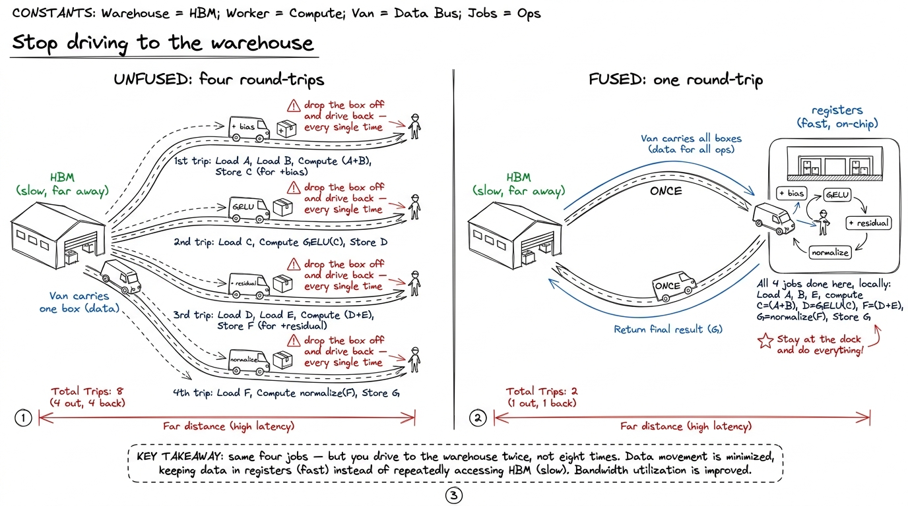
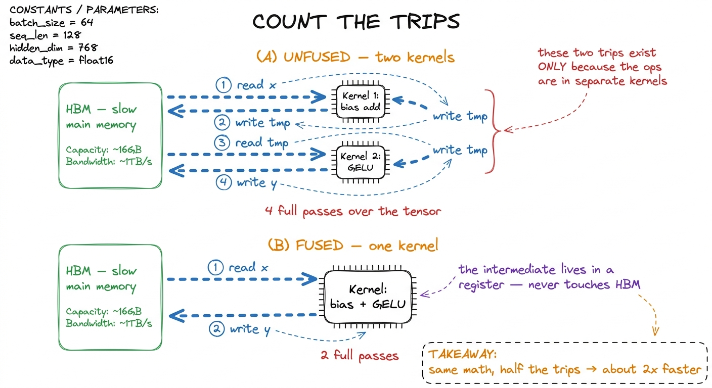
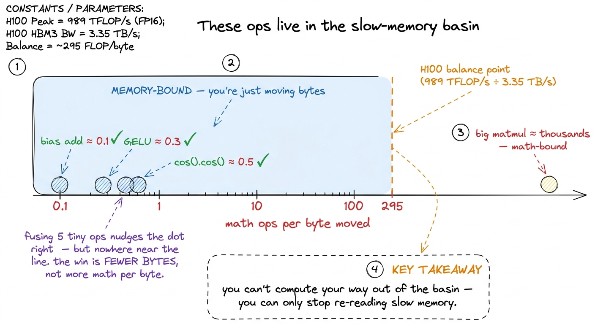
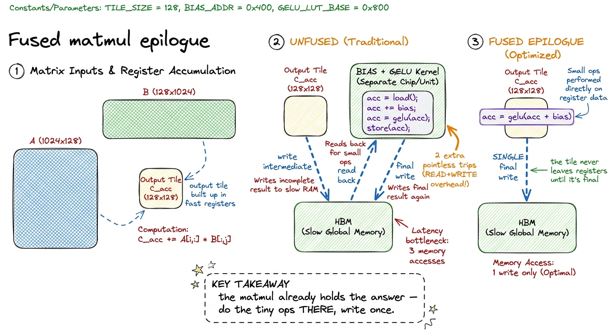

Teaching fusion: stop driving to the warehouse
By the end of this chapter you'll be able to stand at a whiteboard and teach operator fusion — the single highest-leverage optimization in AI inference — so plainly that a student who has never heard the word "kernel" will understand why merging a few tiny operations together can make a model run twice as fast, without changing a single number the model computes. You don't need to know any CUDA to teach this well. You need one warehouse, one honest count of trips, and the discipline to keep saying: we didn't do less math — we drove to the warehouse fewer times.
This is the trick FlashAttention is built on. Own it.
The one-sentence answer
Between the big, expensive matrix multiplies in a neural network, there is always a chain of tiny, cheap operations — add a bias, apply an activation like GELU, add the residual, normalize. Each of these is trivial arithmetic. The naive way to run them is one at a time, and each one reads the entire data tensor out of the GPU's slow main memory and writes it straight back. That back-and-forth is the whole cost. Fusion means: do the whole chain of tiny operations in one go, while the data is sitting in the fast on-chip registers, and only touch the slow memory at the very start and the very end.
Same math. Far fewer trips. Often a clean 2× speedup for free.

figure rendering · The core metaphor: unfused ops make a full round-trip to slow memory fWhere the tiny operations come from
Students need to believe these little ops are everywhere, not a contrived example. A single transformer layer isn't just matmuls — it's matmuls wrapped in small element-wise operations. After a linear layer you add a bias. Then an activation function (GELU, SiLU). Then the residual connection. Before the next matmul you normalize (RMSNorm). Each of those touches every single number in the activation tensor, does almost no arithmetic to it, and — done naively — drags the whole tensor through slow memory to do it.
y = gelu(bias + x). That's two tiny ops — an add and a GELU — sitting between two big matmuls. Looks innocent. Written as two separate library calls, watch what the GPU actually does." Then walk the four trips on the board (next section). The gap between how tiny the math looks and how expensive the movement is — that's the whole lesson.Count the trips — the by-hand number
This is the heart of the chapter, and it's just counting. Take y = gelu(bias + x) written as two separate operations, one kernel each. (A kernel is one launch of work on the GPU — one "trip.") Track how many times the full tensor crosses the slow memory.
- Kernel 1 (bias add): reads the whole tensor from memory (trip 1), adds the bias, writes the whole tensor back (trip 2).
- Kernel 2 (GELU): reads that same tensor back from memory (trip 3), applies GELU, writes it out again (trip 4).
That's four full passes over the tensor. Now look hard at trips 2 and 3 — the write at the end of kernel 1 and the read at the start of kernel 2. The intermediate result bias + x never needed to be seen by anyone except the very next op. We paid to store it in the slowest memory on the chip and then immediately paid again to fetch it right back. Those two trips exist for exactly one reason: the two ops live in separate kernels.
Fuse them into one kernel and it becomes: read once (trip 1), do the add and the GELU while the data sits in registers, write once (trip 2). Two passes instead of four. Half the memory traffic. About 2× faster.
x.cos().cos() takes almost exactly the same wall-clock time as x.cos() alone. Two cosines, same time as one. Why? Both read the tensor once and write it once — and the second cosine happens for free on data that's already in a register. Then push it further: "This is why every activation function costs about the same. GELU does far more arithmetic than ReLU — and they benchmark identically. Neither is limited by its math. Both are limited by the two trips to slow memory that bracket them." Students never forget this one.
figure rendering · The unfused chain pays for the intermediate tensor twice; fusion deletWhy fusion saves movement, not math
This is the subtle point that separates a mentor who really gets it from one who's reciting. Fusion does not do less arithmetic. The fused kernel runs the exact same add and the exact same GELU as the two unfused kernels. What it removes is bytes moved through slow memory. And for these tiny element-wise ops, bytes moved is the only thing that ever mattered.
Here's the honest reason, and it's worth putting one real number on the board. On an NVIDIA H100 GPU, the math units can chew through roughly 989 trillion operations per second, but the pipe from slow memory only delivers about 3.35 trillion bytes per second. So the chip is starving for data: it can do about 295 math operations for every single byte it manages to fetch before the math even becomes the bottleneck. A bias-add does one operation per number while moving 8 bytes (a read and a write). That's an intensity of about 0.1 — roughly three thousand times below what the chip wants. These ops are pure memory movement with a speck of math stapled on.
torch.compile exists in PyTorch is largely to find these chains automatically and emit one fused kernel instead of ten. Every hardware generation, compute grows faster than memory bandwidth — so the memory pipe gets relatively slower, and more of the network falls into the region where fusion is the win. Fusion is the optimization that keeps paying as the hardware improves.
figure rendering · Fusing pointwise ops keeps you memory-bound; the win is halving the byThe best fusion of all: glue the tiny ops onto the matmul
Now the move that matters most in a real transformer. The biggest win isn't fusing two tiny ops together — it's welding the tiny ops onto the big matmul that produced the data in the first place. This is called a fused epilogue, and it's why serious GPU math libraries expose an "epilogue" hook at all.
Think about what a matmul already does. It computes its answer one tile at a time, and it builds up each output tile in the fast on-chip registers. The very last thing it does is write that finished tile from registers out to slow memory. That final write is unavoidable — the answer has to land somewhere. But the naive linear layer then launches a whole separate kernel that reads the answer back, adds the bias, and writes it again. You just paid two extra trips to add a bias — when the matmul had the answer sitting right there in registers, one instruction away from adding the bias for free.

figure rendering · A fused epilogue does the bias and activation while the output tile isThe code change is almost nothing — after the matmul finishes a tile, instead of just writing it, you transform it first:
// acc[i][j] holds the finished output tile, in registers.
float v = acc[i][j] + bias[col + j]; // fused bias — free, data already here
v = gelu(v); // fused activation — also free
C[(row + i) * N + col + j] = v; // the ONE write we were always going to doNo extra kernel launch, no intermediate tensor, no second read. And there's a mirror-image trick on the input side: an RMSNorm that would normally run as its own kernel before a matmul can be folded into the matmul's loading stage, so the normalized activation never gets written to slow memory at all. Between the fused-in norm on the read side and the fused-out bias-and-activation on the write side, a whole transformer sub-block can collapse from five or six kernels down to essentially "one matmul with decorations."
softmax(Q·Kᵀ)·V, and the naive version writes a giant N × N attention matrix out to slow memory and reads it back. FlashAttention refuses to ever write that intermediate — it fuses the whole chain and keeps the running result on-chip. Same principle as our warehouse, applied to the most expensive intermediate in the transformer. The entire industry adopted it within months. When your students understand fusion, they understand the beating heart of FlashAttention.How to see the win before you write a line of code
Teach students the discipline, not just the trick: predict, then measure. Before fusing anything, count the trips. Write down how many times each byte of the activation crosses slow memory in the unfused version, then how many in the fused version. The ratio of those two counts is your predicted speedup — because these kernels are memory-bound, wall-clock time is very nearly proportional to bytes moved.
y = x.cos() and then y = x.cos().cos() on a large tensor. They come back nearly identical — the second cosine is free. Then time a linear → bias → gelu chain written as three separate operations, versus the same thing under torch.compile (which fuses it). Predict the speedup by counting passes first (roughly six passes down to two → about 3×), write your prediction on the board, then run it. When the measured number matches your predicted trip-ratio, the room believes you. When it falls a little short, that's a teaching gift — "the compiler probably fused fewer ops than we hoped; let's go find out which."When the measured speedup matches your trip-count ratio, the student understands the kernel. When it doesn't, they've found something worth knowing.
You can now teach
- Operator fusion as the warehouse metaphor: tiny ops between the matmuls each make a pointless round-trip to slow memory, and fusion does them all in one trip.
- Counting the trips on
gelu(bias + x)by hand — four passes unfused, two passes fused — and which two trips fusion deletes and why they existed. - Why fusion saves movement, not math ("same math, half the trips"), grounded in the H100's ~295-ops-per-byte imbalance and the
x.cos().cos()jaw-dropper. - The fused epilogue: gluing the bias and activation onto the matmul while the output tile is still in registers, so it touches slow memory exactly once — plus the read-side RMSNorm mirror.
- The production link:
torch.compilefuses these automatically, and FlashAttention is this exact idea applied to attention's giant intermediate. - The predict-then-measure discipline: count passes, predict the speedup from the ratio, then confirm it — and treat any gap as the interesting part.